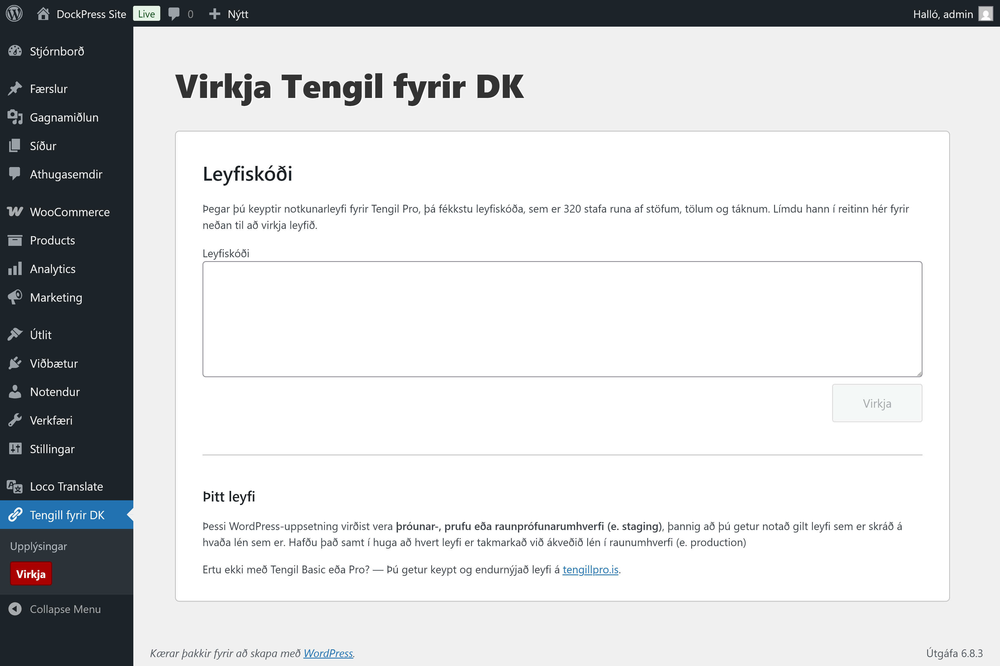
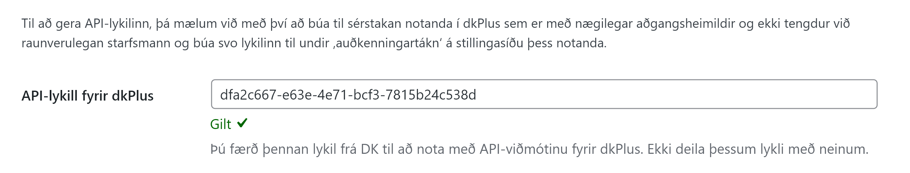

Uppsetning á Tengli fyrir DK
Athugið að Tengill fyrir DK, DK og dkPlus eru viðskiptahugbúnaður og að allar stillingar og mistök við uppsetningu geta haft neikvæðar afleiðingar. Ef þú ert ekki viss um hvaða stillingar séu réttar er best að hafa samband við bókara eða DK-sérfræðing sem þekkir þína DK-uppsetningu áður en lengra er haldið.
Taktu öryggisafrit fyrir notkun
Það er eindregið mælt með því að prófa viðbótina fyrst í lokuðu prufuumhverfi og taka öryggisafrit af WordPress-vefnum þínum áður en þú setur viðbótina upp, rétt eins og að fylgst sé með því að bókhaldsgögn séu í lagi á meðan viðbótin er notuð. Þumalputtareglan er að þú berð ábyrgð á þínum rekstri.
Uppsetning á WordPress-viðbót
Tengill fyrir DK er WordPress-viðbót. Eftir kaup færðu um leið aðgang að zip-skrá sem þú notar til að setja viðbótina upp í þínu WordPress-umhverfi, rétt eins og aðrar viðbætur.
Eftir innskráningu í umsjónarkerfi WordPress opnarðu Viðbætur (e. plugins) og þar inni Bæta við viðbót. Þar inni er svo smellt á Hlaða upp viðbót. Þar inni velurðu Zip-skránna sem þú fékkst af tengillpro.is og smellir á Install Now.
Stillingar í WooCommerce
Athugið að til að hægt sé að virkja viðbótina þarf WooCommerce þegar að vera uppsett og stillt af. Til að byrja að nota Tengil fyrir DK þurfa ennfremur eftirfarandi stillingar að vera til staðar í WooCommerce:
- Gjaldmiðill stilltur á íslenskar krónur
- Heimilisfang á Íslandi
- VSK-þrep fyrir 24%, 11% og 0% VSK
- A.m.k. ein greiðslugátt uppsett
Notkunarleyfi virkjað

Áður en viðbótin er notuð þarf að slá inn leyfiskóða.
Auðkenning við dkPlus

Áður en Tengill fyrir DK er notaður þarf að slá inn API-lykil, sem er stafaruna sem fæst í gegn um dkPlus, en best er að búa til notanda í dkPlus sérstaklega fyrir vefverslun og án tengingar við ákveðinn starfsmann. Lykillinn er svo búinn til undir „auðkenningartákn“ á stillingasíðu þess notanda, afritaður þaðan og límdur yfir í stillingasíðuna sem þú finnur í hliðarstikunni í wp-admin undir Tengill fyrir DK.
Eftir það er ýtt á Vista neðst í forminu og þá kemur upp full útgáfa af stillingaforminu.